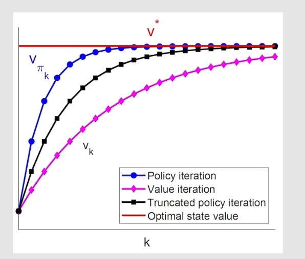
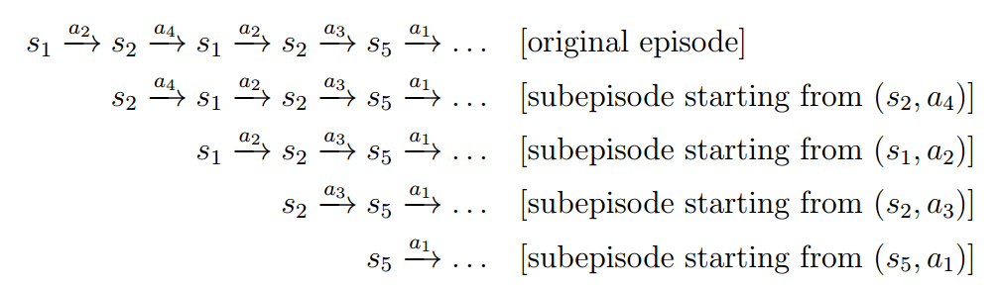

值/策略迭代算法、蒙特卡洛、随机近似理论、时序差分方法
一. 值/策略迭代算法
值迭代算法
其实在BOE那一章的结尾我已经给出了值迭代算法的流程了：
- 设定好\(\gamma\)，\(r\)，\(p(r|s,a)\)，\(p(s'|s,a)\)
- 随意取一个\(v_0\)，然后通过\(q_\pi(s, a) = \sum_{r}p(r|s, a)r + \gamma \sum_{s'}p(s' | s, a)v_\pi(s')\)算出对应的\(q_0\)
- For each state \(s_i\), at time
\(k\)：
- 算出\(q_{k}(s_i, a)\)
- Find the \(a_k^*(s_i)\), s.t, \(q_k(s_i, a_k^*(s_i))\)最大
- \(\pi_{k+1}(a|s_i)=\begin{cases} 1 \quad a=a_k^*(s_i) \\ 0 \quad a \ne a_k^*(s_i) \end{cases}\)
- \(v_{k+1}(s_i) = \sum_{a}\pi_{k+1}(a|s)q_k(s,a)\)
现在，用正式的语言描述这个algorithm： \[ \begin{align*} &\textbf{Initialization: }\text{The probability model $p(r|s,a)$ and $p(s'|s,a)$ for all $(s,a)$ are known. Initial guess $v_0$.} \\ &\text{At time $k$, do} \\ &\quad\quad \text{For every state $s \in \mathcal{S}$, do} \\ &\quad\quad\quad\quad \text{q-value: $q_k(s,a)=\sum_{r}p(r|s,a)r + \gamma \sum_{s'}p(s'|s,a)v_k(s')$} \\ &\quad\quad \text{Maximum action value: $a_k^*(s) = \text{argmax}_{a}q_k(a,s)$} \\ &\quad\quad \text{Policy update: $\pi_{k+1}(a|s)=1$ if $a=a_k^*(s)$, and $\pi_{k+1}(a|s)=0$ otherwise} \\ &\quad\quad \text{Value update: $v_{k+1}=q_k(a_k^*(s), s)$} \end{align*} \]
策略迭代算法
思想就是首先先初始化一个策略，然后先得到该策略下的state value（即Policy evaluation, PE），然后得到state value后就可以算出对应的action value，然后选择action value最大的action，即优化当前policy（Policy improvement），得到新的policy。依次类推下去，最终即可得到\(\pi^*, v^*\)。
用正式的语言描述这个algorithm： \[ \begin{align*} &\textbf{Initialization: }\text{The probability model $p(r|s,a)$ and $p(s'|s,a)$ for all $(s,a)$ are known. Initial guess $\pi_0$.} \\ &\text{At time $k$, do} \\ &\quad\quad \text{Policy evaluation:} \\ &\quad\quad \text{Initialization: an arbitrary initial guess $v_{\pi_k}^{(0)}$} \\ &\quad\quad \text{While $v_{\pi_k}^{(j)}$ has not converged, for the $j$th iteration, do} \\ &\quad\quad\quad\quad \text{For every state $s \in \mathcal{S}$, do} \\ &\quad\quad\quad\quad\quad\quad v_{\pi_k}^{(j+1)}(s) = \sum_{a}\pi_k(a|s)\left[ \sum_{r}p(r|s,a)r + \gamma\sum_{s'}p(s'|s,a)v_{\pi_k}^{(j)}(s') \right] \\ &\quad\quad \text{Policy improvement:} \\ &\quad\quad \text{For every state $s \in \mathcal{S}$, do} \\ &\quad\quad\quad\quad q_{\pi_k}(s,a) = \sum_{r}p(r|s,a)r + \gamma\sum_{s'}p(s'|s,a)v_{\pi_k}(s') \\ &\quad\quad a_k^*(s) = \text{argmax}_{a}q_{\pi_k}(s,a) \\ &\quad\quad \text{$\pi_{k+1}(a|s) = 1$ if $a = a_k^*(s)$, and $\pi_{k+1}(a|s)=0$ otherwise} \end{align*} \]
两者比较
值迭代算法是从一个初始state value开始，有了state value，就可以算出action value，进而得出当前最优策略，然后去更新state value，依次类推。
策略迭代算法是从一个初始policy开始，然后通过迭代算法求出当前policy下的最优state value，然后再通过state value得到action value，进而更新当前最优策略。依次类推。
可以发现，不同点就在于，同样是得到一个policy，值迭代是立马用其代入bellman-equation算出迭代一次后的state value。而策略迭代是代入bellman-equation迭代很多次算出的state value。所以直观上来说，策略迭代的收敛次数会更少，但是单次计算量会更大。

二. 蒙特卡洛
引入
前面的值/策略迭代算法都是model-based RL，蒙特卡洛是我们接触到的第一个model-free的方法。
model不知道的时候怎么办呢？蒙特卡洛其实就是大量采样，用样本的分布来估计model的分布。
蒙特卡洛，Monte Carlo，MC。
MC Basic
MC Basic算法其实就跟policy迭代算法一样，只不过把policy迭代算法里的model-based部分，即计算\(v_{\pi_k}, q_{\pi_k}\)的部分，换成了依靠采样直接算出基于一个策略\(\pi_{k}\)的\(q_{\pi_k}\)。第二步policy improvement就一样了。
原本policy迭代算法里求\(q_{\pi_k}\)是依赖于这个公式：\(q_{\pi_k}(s,a)=\sum_{r}p(r|s,a)r + \gamma\sum_{s'}p(s'|s,a)v_{\pi_k}(s')\)
但是MC Basic算\(q_{\pi_k}\)是依赖于它的原始定义：\(q_{\pi_k}(s,a)=\mathbb{E}(G_t | S_t = s, A_t = a)\)
即对于state-action pairs, 通过大量采样估计出所有的\(q_{\pi_k}(s,a)\)，然后再进行policy improvement。
用数学语言来描述如下： \[ \begin{align*} &\textbf{Initialization: }\text{Initial guess $\pi_0$.} \\ &\text{At time $k$, do} \\ &\quad\quad \text{For every state $s \in \mathcal{S}$, do} \\ &\quad\quad\quad\quad \text{For every action $a \in \mathcal{A}(s)$, do} \\ &\quad\quad\quad\quad\quad\quad \text{Collect sufficiently many episodes starting from $(s,a)$ following $\pi_k$} \\ &\quad\quad\quad\quad\quad\quad \text{$q_{\pi_k}(s,a)=$ average return of all the episodes starting from $(s,a)$} \\ &\quad\quad\quad\quad \text{Policy improvement step:} \\ &\quad\quad\quad\quad a_k^*(s) = \text{argmax}_{a}q_{\pi_k}(s,a) \\ &\quad\quad\quad\quad \text{$\pi_{k+1}(a|s)=1$ if $a=a_k^*()s$, and $\pi_{k+1}(a|s)=0$ otherwise} \end{align*} \] 很简单，right？
为啥这里要用episode这个词而非trajectory这个词呢？因为trajectory可能是无限的，而采样是离散的，所以通常我们设置一个采样长度上限，那么每采样一条trajectory其实就是有限的，也叫一条episode。
MC Exploring Starts
MC Exploring Starts其实就是对MC Basic算法的一个时间复杂度优化。
MC Basic是对每一个\((s,a)\) pair都采样很多episode来估计其\(q_{\pi_k}(s, a)\)，采样的途中可能会路过很多其余的\((s',a')\) pair，其实采样出来的return也可以用来估计它们的action value。下面这个图就可以很好的解释了MC Basic的数据浪费：

看第一条episode，在MC Basic算法里那么一长条episode，我们只用它来估计了\((s_1, a_2)\)的action value。但其实，还可以用来估计\((s_2, a_4), \cdots\)的action value，它们的return之间只差了一个\(\gamma\)和reward。
所以MC Exploring Starts就是抓住了这点进行优化，就是类似记忆化搜索的思想 + dp填表法的思想。它的具体思想如下：
1 | int T; // episode的长度 |
用数学语言描述如下： \[ \begin{align*} &\textbf{Initialization: }\text{ Initial policy $\pi_0(a|s)$ and initial value $q(s,a)$ for all $(s,a)$.} \\ &\quad\quad\quad\quad\quad\quad\quad~\text{Returns(s,a) = 0 and Num(s,a) = 0 for all $(s,a)$.} \\ &\text{For each episode, do} \\ &\quad\quad \text{Episode generation: Select a starting state-action pair $(s_0, a_0)$} \\ &\quad\quad \text{and ensure that all pairs can be possibly selected (this is the exploring-starts condition).} \\ &\quad\quad \text{Following the current policy, generate an episode of length $T$: $s_0, a_0, r_1, \cdots, s_{T-1}, a_{T-1}, r_T$.} \\ &\quad\quad \text{Initialization for each episode: $g \gets 0$} \\ &\quad\quad \text{For each step of the episode, $t = T - 1, T - 2, \cdots, 0, $ do} \\ &\quad\quad\quad\quad g \gets \gamma g + r_{t+1} \\ &\quad\quad\quad\quad \text{Returns($s_t, a_t$) $\gets$ Returns($s_t, a_t$) + $g$} \\ &\quad\quad\quad\quad \text{Policy evaluation:} \\ &\quad\quad\quad\quad q(s_t, a_t) \gets \text{Returns($s_t, a_t$) / Num($s_t,a_t$)} \\ &\quad\quad\quad\quad \text{Policy improvement:} \\ &\quad\quad\quad\quad \text{$\pi(a|s_t)=1$ if $a = \text{argmax}_aq(s_t, a)$ and $\pi(a|s_t)=0$ otherwise} \end{align*} \] 最后我们来看看这个“Exploring Starts”是什么意思。Exploring我个人理解就是由于是dp填表法，所以episode就需要自己去生成，也就是exploring的过程。Starts是因为此时的算法不是像MC Basic样每个state-action pair都去强制估计了，所以为了尽量确保每个state-action都被估计到，每个episode的起点的选法就很有讲究，最好每个state-action都被作为起点选择一次（当然这就退化为MC Basic了）
MC \(\varepsilon\)-Greedy
MC Exploring Starts算法很好，但是它不能保证每个state-action pair都被估计到，所以选多少个episode，每个episode的起点是啥就很有讲究。可能起点选少了直接导致效果不好，选多了又速度慢。
为了解决上述问题，MC \(\varepsilon\)-Greedy 算法应运而生。
\(\varepsilon\)-Greedy与MC Exploring Starts的区别就在Policy improvement这一步，MC Exploring Starts在这一步是直接将最大的action value对应的action的概率设为1其余为0，但是\(\varepsilon\)-Greedy是最大的action value对应的action概率设为\(1 - \varepsilon\)，其余的action概率设为\(\varepsilon\)。
这样的好处就是不需要对全部的state-action pair都作为起点生成episode，只要生成一些episode（起点随便），并且只要保证这条episode的长度T很长，那你在就几乎可以路过所有state-action pairs，从而估计它们。就不需要从很多不同的起点开始了。
坏处就是通过\(\varepsilon\)-Greedy得到的policy并不是最优的，因为它始终带着探索的概率。所以通常我们的做法是：
初始化policy为\(\varepsilon\)策略，进行多次episode，每次的episode的\(\varepsilon\)递减。这样就可以保证前面的episode随机性很强，从而可以覆盖到大多数state-action pair，但是毕竟我们是要求最优解的，所以后期的episode的\(\varepsilon\)就得减小。最后，在通过\(\varepsilon\)-Greedy得到一个policy后，还是要将其转为确定性的策略（即不带概率的）。
\(\varepsilon\)-Greedy这个算法的目的就是为了避免要进行多次全部state-action pair起点选择，仅此而已。它是如何做到的？尝试不是最优的策略，通过尝试不是最优的策略，从而尽可能的，覆盖所有的state-action paris。所以从原理上，这个算法就是会降低准确率。但是它也很具有实际意义，因为你想啊，你在仿真中设计的算法是要用到实际环境中去的。你的机器人通常就从安全的起点出发开始探索，如果你要让它从全部的state-action开始，那显然不现实。例如深海作业，你都是让robot从浅水区开始，然后让它自己去探索，尽可能覆盖所有state-action pairs。你总不可能让它从深海区开始吧，因为你人类到不了深海区。
下面是用数学描述： \[ \begin{align*} &\textbf{Initialization: } \text{Initial policy $\pi_0(a|s)$ and initial value $q(s,a)$ for all $(s,a)$. Returns(s,a)=0 and Num(s,a)=0} \\ &\text{for all $(s,a)$. $\varepsilon \in (0, 1]$} \\ &\text{For each episode, do} \\ &\quad\quad \text{Episode generation: Select a starting state-action pair $(s_0, a_0)$. Following the current policy,} \\ &\quad\quad \text{generate an episode of length $T: s_0, a_0, r_1, \cdots, s_{T-1}, a_{T-1}, r_T$.} \\ &\quad\quad \text{Initialization for each episode: $g \gets 0$} \\ &\quad\quad \text{For each step of the episode, $t = T-1, T-2, \cdots, 0,$ do} \\ &\quad\quad\quad\quad g \gets \gamma g + r_{t+1} \\ &\quad\quad\quad\quad \text{Returns($s_t, a_t$) $\gets$ Returns($s_t, a_t$) + $g$} \\ &\quad\quad\quad\quad \text{Num($s_t, a_t$) $\gets$ Num($s_t, a_t$) + 1} \\ &\quad\quad\quad\quad \text{Policy evaluation:} \\ &\quad\quad\quad\quad q(s_t, a_t) \gets \text{Returns($s_t, a_t$) / Num($s_t, a_t$)} \\ &\quad\quad\quad\quad \text{Let } a^* = \text{argmax}_a q(s_t, a) \text{ and} \\ &\quad\quad\quad\quad\quad\quad \pi(a|s_t) = \begin{cases}1 - \frac{|\mathcal{A}(s_t)|-1}{|\mathcal{A}|}\varepsilon, \quad a = a^* \\ \frac{1}{|\mathcal{A}(s_t)|}\varepsilon, \quad a \ne a^* \end{cases} \end{align*} \] 个人觉得，\(\varepsilon\)-Greedy的探索性与收敛性是严重矛盾的，因为明明已经通过采样得到state-action value值了，只需要一直不断的更新deterministic的策略，就可以收敛了。但是\(\varepsilon\)-Greedy为了探索性，会将"探索"这个元素，加入进自己的"策略"里。所以，就像一个明知道最优解的人，在做事情的时候，仍然小概率选择不是最优的东西。所以，\(\varepsilon\)-Greedy 这个算法收敛性，有些靠天。
总结
我们从model-based的算法（值/策略迭代算法）开始说起，model-based算法的收敛性和最优性都是有保证的，在"强化学习1"中有提到证明。
随后我们进入了model-free算法，此时我们只能依靠采样来估计\(p(s,a)\)，所以MC Basic只要采样数量无限大，那么其准确性和收敛性也是可以得到保证的。
但是MC Basic效率太慢了，为此MC Exploring Starts应运而生，运用了记忆化的思想加速了收敛。只要保证每个action-pair都被大量采样到，该算法也能保证准确性和收敛性。
但是问题就是为了保证“每个action-pair都被大量采样到”，MC Exploring Starts就需要从不同的action-pair起点去生成episode进行采样。而现实环境中这是有难度的，例如你不能让机器人从深海区开始，一般都是从浅水区开始。
所以MC \(\varepsilon\)-Greedy算法应运而生，增加了"探索"机制，从而不必使每一个action-pair都要作为起点去生成episode进行采样。但是因为探索是直接加到policy里，所以该算法的准确率会下降，甚至收敛都不一定。不过这对未来的算法具有启发意义。
三. 随机近似理论
这一章的内容是为了下一章时序差分方法打基础。
引入
以前我们用采样估计一个平均数的时候，都是收集m个样本，然后求它们的平均数作为估计值。
但这样做的话，你需要等到所有的样本都收集到了，才能进行估计。
所以我们可以用增量式的方法来解决这个问题：
令：\(w_{k+1} = \frac{1}{k}\sum_{i=1}^k x_i, k=1,2,\cdots\)
所以有：\(w_k = \frac{1}{k-1}\sum_{i=1}^{k-1}x_i, k=1,2,\cdots\)
那么：\(w_{k+1} = w_k - \frac{1}{k}(w_k - x_k)\)
所以来一个样本，就做一次迭代，最终估计的效果跟全部收集到是一样的。
其实，上面的算法可以进一步推广为： \[ w_{k+1} = w_k - \alpha_k(w_k - x_k) \] 当\(\alpha_k > 0\)并且满足一定条件时，上面的\(w_k\)也能收敛于\(\mathbb{E}(X)\)
上面的算法其实就是一种特殊的Stochastic Approximation algorithm.
RM
Stochastic Apporximation (SA) algorithm其实是一大类算法的总称，描述的是“涉及到随机变量采样”、"迭代式"的算法。
Robbins-Monro (RM)算法是SA algorithm算法里的一项开创性工作。
下面来思考这么一个问题，解方程： \[ g(w) = 0 \] 其中，\(g(\cdot)\)未知，但是\(\nabla g\)是正数且有上下界。
那么，RM algorithm可以解决这个问题： \[ w_{k+1} = w_k - a_k \tilde{g}(w_k, \eta_k), \quad k=1,2,3,\cdots \]
- \(w_k\) 是第k次迭代对\(g(w)=0\)解的估计
- \(\tilde{g}(w_k, \eta_l)=g(w_k) + \eta_k\)是第k次迭代的黑盒输出(这个输出跟真实的输出可能存在误差)
- \(a_k\)是第k次迭代的正系数
只要一直迭代下去，那么最终迭代到的\(w^*\)就是\(g(w)=0\)的解。
为啥成立呢？
从直观上很容易理解，因为\(\nabla g\)是正数且有上下界，所以如果\(w_k\)越过了零点，那么其函数值就>0了，那么\(w_k\)就要往回走一点，也就是减去一个正数，用系数 * 函数值刚好可以用作这个系数。如果\(w_k\)还没到零点，那么其函数值<0，那么\(w_k\)就要前进一点，也就是减去一个负数，用系数 * 函数值刚好可以用作这个系数。一直迭代下去，\(w_k\)自然趋近零点。
以上，都是直观上的描述。现在，让我们给出Robbins-Monor (RM) 算法的严谨数学表述： \[ \begin{align*} &\text{In the Robbins-Monro algorithm: } w_{k+1} = w_k - a_k \tilde{g}(w_k, \eta_k), \quad k=1,2,3,\cdots\\ &if \\ &\quad\quad \text{1) $0 < c_1 \le \nabla_w g(w) \le c_2$ for all $w$;} \\ &\quad\quad \text{2) $\sum_{k=1}^{\infty}a_k = \infty$ and $\sum_{k=1}^{\infty}a_k^2 < \infty$;} \\ &\quad\quad \text{3) $\mathbb{E}[\eta_k | \mathcal{H}_k] = 0$ and $\mathbb{E}[\eta_k^2 | \mathcal{H}_k] < \infty$}; \\ &\text{where $\mathcal{H}_k = \{w_k, w_{k-1}, \cdots, \}$, then $w_k$ converges with probability 1 (w.p.1) to the root $w^*$ satisfying $g(w^*)=0$.} \end{align*} \]
- 这里用依概率收敛(w.p.1)是因为\(w_k\)是涉及到随机变量采样的一个数，所以为了严谨，这里用了w.p.1
- (1)是对梯度的要求，即要求梯度是大于0的且有上下界
- (2)是对系数的要求，\(\sum_{k=1}^{\infty}a_k^2 < \infty\)保证了\(a_k\)会收敛到0，\(\sum_{k=1}^{\infty}a_k = \infty\)保证了\(a_k\)收敛的速度不会很快
- (3)是对测量误差的要求，就是说假设你采样的误差的期望要是0，且误差的平方的期望不能发散
这里，我想讨论一下为什么第二个条件很重要：
若\(\sum_{k=1}^{\infty}a_k^2 < \infty\)，则会保证\(a_k\)收敛到0，则会使得\(w_{\infty+1} = w_{\infty}\)，即\(w_k\)收敛。
若\(\sum_{k=1}^{\infty}a_k = \infty\)呢？有啥用？不妨写出下列式子： \[ \begin{cases} &w_2 = w_1 - a_1\tilde{g}(w_1, \eta_1) \\ &w_3 = w_2 - a_2\tilde{g}(w_2, \eta_2) \\ &\cdots \end{cases} \] 将以上式子全加起来，可得到：\(w_{\infty} - w_1 = \sum_{k=1}^{\infty}a_k \tilde{g}(w_k, \eta_k)\)
如果\(\sum_{k=1}^{\infty}a_k = \infty\)，就可以保证\(\sum_{k=1}^{\infty}a_k \tilde{g}(w_k, \eta_k)\)发散，这样我们的\(w_1\)就随便取都行了。如果有界的话，那我的\(w_1\)的取值就被限定在一个范围了。
SGD
GD、BGD、SGD其实是一个系列的算法，它们的目的，都是解决下列这个优化问题： \[ \min_w J(w) = \mathbb{E}\left[ f(w, X) \right] \] （即找到\(w\)，使得\(J(w)\)最小）
梯度下降大家都很熟悉了，这里直接给出定义和简单解释。
首先是gradient descent, GD, 梯度下降算法： \[ w_{k+1} = w_k - \alpha_k \mathbb{E}\left[ \nabla_wf(w_k, X) \right] \] 但是这个形式涉及到期望，是理想的式子，在现实中，我们往往用样本去估计这个期望，所以就有了batch gradient descent, BGD： \[ \mathbb{E}\left[ \nabla_wf(w_k, X) \right] \approx \frac{1}{n}\sum_{i=1}^{n} \nabla_wf(w_k, x_i) \\ w_{k+1} = w_k - \alpha_k \frac{1}{n} \sum_{i=1}^{n} \nabla_w f(w_k, x_i) \] 但是毕竟还是要求出一个batch后才能迭代更新一次嘛，还是慢了，那就来一个样本就更新一次，于是就有了stochastic gradient descent, SGD, 随机梯度下降： \[ w_{k+1} = w_k - \alpha_k \nabla_w f(w_k, x_k) \] 证明SGD收敛的过程我这里大概证一下：
首先，SGD可以写为RM算法形式： \[ w_{k+1} = w_k - \alpha_k \tilde{g}(w_k, \eta_k) \\ \tilde{g}(w_k, \eta_k) = \nabla_wf(w_k, x_k) = \mathbb{E}[\nabla_wf(w,X)] + \left( \nabla_w f(w_k,x_k) - \mathbb{E}[\nabla_w f(w,X)] \right) \] 令\(g(w,X) = \nabla_w f(w, X)\)，其实我们就是想求解\(g(w, X) = 0\)这个方程。
那么上面的\(\tilde{g}(w_k, \eta_k)\)就可写为\(g(w, X) + \eta\)的形式，所以SGD被写为了RM算法的形式。
只要保证\(g(w, X)\)的梯度是正数且有上下界（即\(f(w, X)\)是凸的），且系数满足那俩条件，且误差\(\eta\)满足那俩条件，那么SGD算法的收敛性就可以得到保证。
用数学语言描述SGD的收敛条件如下： \[ \begin{align*} &\text{In the SGD algorithm, if} \\ &\quad\quad \text{1) } 0 < c_1 \le \nabla_w^2 f(w, X) \le c_2 \\ &\quad\quad \text{2) } \sum_{k=1}^{\infty}a_k = \infty \text{ and } \sum_{k=1}^{\infty} a_k^2 < \infty \\ &\quad\quad \text{3) } \{x_k\}_{k=1}^{\infty} \text{ is iid} \\ &\text{then $w_k$ converges to the root of $\nabla_w\mathbb{E}[f(w, X)] = 0$ with probability 1.} \end{align*} \] SGD这个算法究竟好不好呢？其实是挺好的，当\(w_k\)与\(w^*\)相距较远时，它的表现和GD的表现差不多。我们可以通过误差来看看： \[ \delta_k\doteq\frac{|\nabla_wf(w_k,x_k)-\mathbb{E}[\nabla_wf(w_k,X)]|}{|\mathbb{E}[\nabla_wf(w_k,X)]|} \] 那么通过理论分析，我们可以得到，SGD算法下，这个误差满足： \[ \delta_k\leq\frac{\mid\overbrace{\nabla_wf(w_k,x_k)}^\text{stochastic gradient}-\overbrace{\mathbb{E}[\nabla_wf(w_k,X)]}^\text{true gradient}\mid}{\underbrace{c|w_k-w^*|}_{\text{distance to the optimal solution}}} \] 所以当\(w_k\)与\(w^*\)相距较远时，它的表现和GD的表现差不多，这是个很不错的算法。
总结
- 这一章其实上是介绍了优化算法。
- 首先先介绍了解决\(g(w) =
0\)的RM算法：\(w_{k+1} = w_k - a_k
\tilde{g}(w_k, \eta_k)\)，它需要满足下列三个条件才能收敛：
- \(0 < c_1 \le \nabla_w g(w) \le c_2\)
- \(\sum_{k=1}^{\infty}a_k = \infty\) and \(\sum_{k=1}^{\infty}a_k^2 < \infty\)
- \(\mathbb{E}[\eta_k | \mathcal{H}_k] = 0\) and \(\mathbb{E}[\eta_k^2 | \mathcal{H}_k] < \infty\)
- GD系列算法也属于RM算法，它们负责解决\(\min_w J(w) = \mathbb{E}\left[ f(w, X)
\right]\)问题，换句话说，就是解决\(\mathbb{E}\left[ \nabla_wf(w_k, X) \right] =
0\)问题，所以也可以转换为RM去证明收敛性。最终证明出需要满足下列三个条件才能收敛：
- \(0 < c_1 \le \nabla_w^2 f(w, X) \le c_2\)
- \(\sum_{k=1}^{\infty}a_k = \infty \text{ and } \sum_{k=1}^{\infty} a_k^2 < \infty\)
- \(\{x_k\}_{k=1}^{\infty} \text{ is iid}\)
四. 时序差分方法
TD algorithm
TD算法通常是指一大类算法，但是这一小节的TD算法就是具体的一个小算法，它用来在已知一个策略\(\pi\)下，来估计\(v_\pi\)的值。
首先回想一下MC Exploring Starts的思路，进行很多次起点选择，每次选择一个起点后生成一条episode，然后倒着更新一路上的\(q(s,a)\)
是有点记忆化的味道了，不过还不够记忆化，因为
我直接给出TD algorithm： \[ \begin{cases} v_{t+1}(s_t) = v_t(s_t) - \alpha_t(s_t)\left[ v_t(s_t) - \left[ r_{t+1} + \gamma v_t(s_{t+1}) \right] \right], \\ v_{t+1}(s) = v_t(s), \forall s \ne s_t. \end{cases} \] 这就是完全的记忆化了。在程序上可以这么实现：进行若干次迭代，每次迭代循环所有的state: \(s_t\)，根据policy可以找到它的下一个状态: \(s_{t+1}\)，然后按照上面的迭代式更新一遍\(v(s_t)\)。若干次迭代结束后，\(v(s) \to v_{\pi}(s), \forall s\)
上面的式子从直观上也很好理解，\(v_t(s_t)\)就是对\(v_\pi(s_t)\)的估计，所以\(v_t(s_t)\)是不断在迭代更新的，咋更新的呢？就是不断的逼近\(r_{t+1} + \gamma v_t(s_{t+1})\)。这就是bellman equation啊。所以本质上我觉得就是迭代法求bellman equation，只不过与最开始那个迭代法求bellman equation是在model-based的情况下，现在这个迭代法是无需知道model的。
我们来从数学上证明一下上面那个算法为什么会收敛到\(r_{t+1} + \gamma v_t(s_{t+1})\)：
令：\(y = r_{t+1} + \gamma v_t(s_{t+1})\)
则迭代式可写为：\(v_{t+1}(s_t) = v_t(s_t) - \alpha_t(s_t)[v_t(s_t) - y]\)
两边同减y：\(v_{t+1}(s_t) - y = (v_t(s_t) - y) - \alpha_t(s_t)[v_t(s_t) - y]\)
整理：\(v_{t+1}(s_t) - y = [1 - \alpha_t(s_t)](v_t(s_t) - y)\)
\(\therefore \|v_{t+1}(s_t) - y\| \le \| 1 - \alpha_t(s_t) \| \cdot \|v_t(s_t) - y\|\)
所以最终\(v_{t}(s_t) \to y\)
当\(v_t(s_t) \to r_{t+1} + \gamma v_t(s_{t+1})\)时其实就是bellman equation了。
（你可能会问，你这个bellman equation没带概率啊。别急，概率在迭代过程中policy选择当前state下一个状态\(s_{t+1}\)进行更新的时候用到了，所以估计出来的这个\(v_t(s)\)，就是\(v_\pi(s)\)）
（数学证明出，当\(\sum_{t} \alpha_t(s) = \infty\), \(\sum_{t} \alpha_t^2(s) < \infty\), \(\forall s\)时，上述TD算法就能使\(v_t(s) \to v_\pi(s), \forall s\)）
Sarsa
前面的TD是在model-free的情况下估计出state value。Sarsa就是在model-free的情况下估计出action value。
直接给出算法，非常好理解： \[ \begin{cases} q_{t+1}(s_t, a_t) = q_t(s_t, a_t) - \alpha_t(s_t, a_t)\left[ q_t(s_t, a_t) - [r_{t+1} + \gamma q_t(s_{t+1}, a_{t+1})] \right], \\ q_{t+1}(s,a) = q_t(s,a), \quad \forall (s,a) \ne (s_t, a_t) \end{cases} \] 有意思的小故事，为啥叫Sarsa？其实就是state-action-reward-state-action的缩写，难蚌。
程序也很好写，进行若干次迭代，每次迭代双重循环枚举state、action，然后按照上面迭代式更新就好了。最终\(q_t(s,a) \to q_\pi(s,t)\)
其收敛条件为：\(\sum_{t} \alpha_t(s,a) = \infty\), \(\sum_{t}\alpha_t^2(s,a) < \infty\), \(\forall (s,a)\)
action value都求出来了，后续你是greedy还是\(\varepsilon\)-Greedy去update你的policy都可以。
Q-learning
跟Sarsa不同，Sarsa是估计action value，结合policy improvement才可以得到最优policy。而Q-learing是一步到位直接估计optimal action value。
其实就修改了Sarsa迭代式里的一个地方，直观感觉就是把policy improvement这一步直接换成在更新时就优化action value了。这样直接可以得到最优action value，再greedy的求出最优策略即可。 \[ \begin{cases} q_{t+1}(s_t, a_t) = q_t(s_t, a_t) - \alpha_t(s_t, a_t)\left[ q_t(s_t, a_t) - [r_{t+1} + \gamma \max_{a \in \mathcal{A}}q_t(s_{t+1}, a)] \right], \\ q_{t+1}(s,a) = q_t(s,a), \forall (s,a) \ne (s_t, a_t) \end{cases} \] 因为Q-learning用的很多，所以这里我给出其正式的流程描述，分为on-policy和off-policy两个版本：
On-policy version： \[ \begin{align*} &\text{For each episode, do} \\ &\quad\quad \text{If the current $s_t$ is not the target state, do} \\ &\quad\quad\quad\quad \text{Collect the experience $(s_t, a_t, r_{t+1}, s_{t+1})$: In particular, take action $a_t$ follwing} \\ &\quad\quad\quad\quad \pi_t(s_t), \text{ generate } r_{t+1}, s_{t+1}. \\ &\quad\quad\quad\quad \text{Update q-value:} \\ &\quad\quad\quad\quad\quad\quad q_{t+1}(s_t, a_t) = q_t(s_t, a_t) - \alpha_t(s_t, a_t) - \alpha_t(s_t, a_t)\left[ q_t(s_t, a_t) - \left[ r_{t+1} + \gamma \max_{a}q_t(s_{t+1}, a) \right] \right] \\ &\quad\quad\quad\quad \text{Update policy:} \\ &\quad\quad\quad\quad\quad\quad \pi_{t+1}(a|s_t) = 1 - \frac{\varepsilon}{|\mathcal{A}|}(|\mathcal{A}| - 1) \text{ if } a = \text{argmax}_a q_{t+1}(s_t, a) \\ &\quad\quad\quad\quad\quad \quad \pi_{t+1}(a|s_t) = \frac{\varepsilon}{|\mathcal{A}|} \text{ otherwise} \end{align*} \] Off-policy version： \[ \begin{align*} &\text{For each episode $\{s_0, a_0, r_1, s_1, a_1, r_2, \cdots \}$ generated by $\pi_b$, do} \\ &\quad\quad \text{For each step $t = 0,1,2,\cdots$ of the episode, do} \\ &\quad\quad\quad\quad \text{Update q-value:} \\ &\quad\quad\quad\quad\quad\quad q_{t+1}(s_t, a_t) = q_t(s_t, a_t) - \alpha_t(s_t, a_t) - \alpha_t(s_t, a_t)\left[ q_t(s_t, a_t) - \left[ r_{t+1} + \gamma \max_{a}q_t(s_{t+1}, a) \right] \right] \\ &\quad\quad\quad\quad \text{Update target policy:} \\ &\quad\quad\quad\quad\quad\quad \pi_{T,t+1}(a|s_t) = 1 \text{ of } a = \text{argmax}_a q_{t+1}(s_t, a) \\ &\quad\quad\quad\quad\quad\quad \pi_{T,t+1}(a|s_t) = 0 \text{ otherwise} \end{align*} \] 可以发现，off-policy与on-policy的区别就是，off-policy生成experience数据的policy与优化出的policy不同。
所以off-policy的一个特点就是最终的优化结果跟生成数据的policy相关性很大，因为它是在生成experience数据的policy基础上优化的。
但是on-policy，即使初始策略很烂，但是因为是持续优化，最终仍可以收敛到全局最优policy。
那么off-policy就没有好处了吗？并不是的，它有着自身的优点，在后续与DL结合的时候你就知道了。
总结
这一章叫时序差分方法，但是我更愿意把其叫做model-free的迭代法求state value(TD)、action value(Sarsa)、optimal action value(Q-learing)。与MC系列算法相比，我觉得是MC系列的完全记忆化版本，即MC Exploring Starts算法的优化版本。